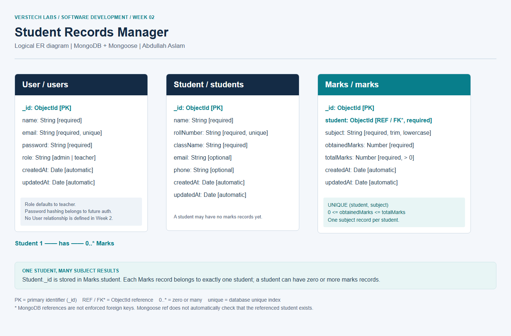
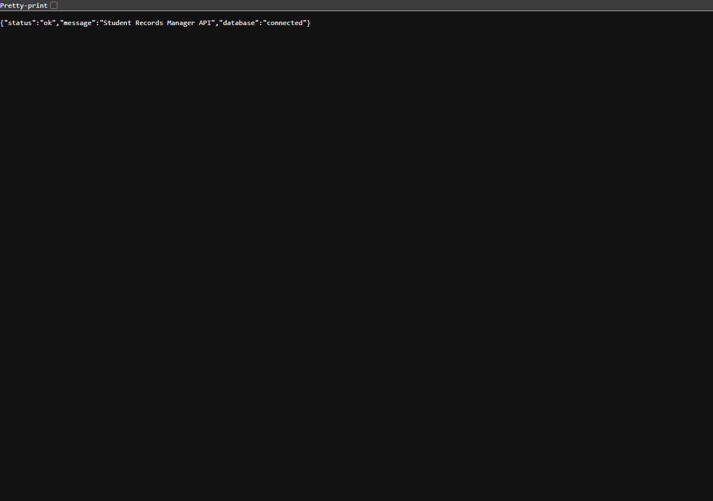
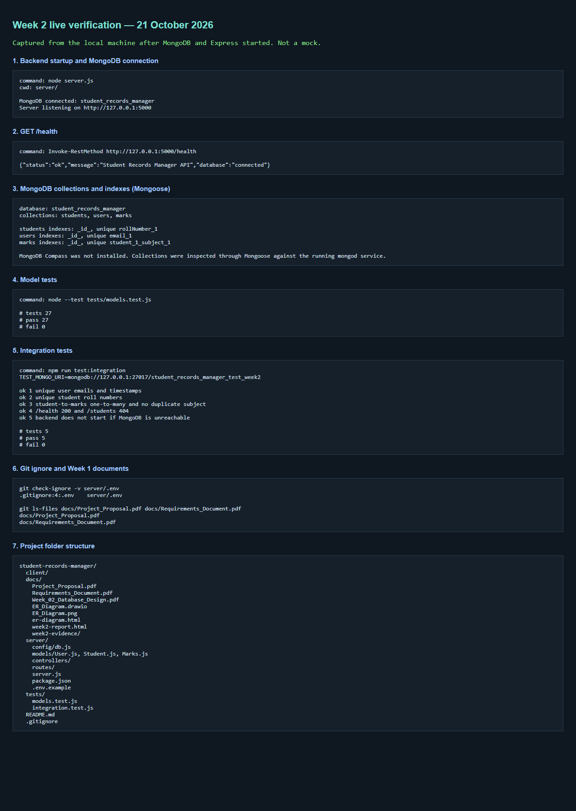

VERSTECH LABS INTERNSHIP — SOFTWARE DEVELOPMENT — WEEK 2
Identify the data the application must store, design MongoDB entities with keys and relationships, produce an ER diagram, and set up the initial Express + Mongoose backend skeleton. Student CRUD, authentication, and dashboards are intentionally left for later weeks.
| Layer | Choice |
|---|---|
| Backend | Node.js and Express.js |
| Database | MongoDB |
| ODM | Mongoose |
| Environment | dotenv |
| Frontend (later) | React.js + Vite |
| API testing (later) | Postman |
| Version control | Git + GitHub |
Independent staff account used later for login. No teacher-to-student assignment is modelled in Week 2.
| Field | Type | Rules |
|---|---|---|
| _id | ObjectId | Primary identifier, generated by MongoDB |
| name | String | Required |
| String | Required, unique, stored lowercase | |
| password | String | Required; hashing is deferred to Week 4 |
| role | String | Enum: admin or teacher (default teacher) |
| createdAt / updatedAt | Date | Mongoose timestamps |
| Field | Type | Rules |
|---|---|---|
| _id | ObjectId | Primary identifier |
| name | String | Required |
| rollNumber | String | Required, unique |
| className | String | Required |
| String | Optional | |
| phone | String | Optional |
| createdAt / updatedAt | Date | Mongoose timestamps |
| Field | Type | Rules |
|---|---|---|
| _id | ObjectId | Primary identifier |
| student | ObjectId | Required reference to Student |
| subject | String | Required, trimmed and lowercased |
| obtainedMarks | Number | Required, finite, 0 to totalMarks |
| totalMarks | Number | Required, finite, greater than 0 |
| createdAt / updatedAt | Date | Mongoose timestamps |
A compound unique index on (student, subject) prevents two results for the same student and subject.
Student → Marks: one-to-many.
Each marks document stores the student’s _id in Marks.student.
MongoDB does not create a SQL-style foreign key. Mongoose uses an ObjectId plus
ref: "Student" so later code can populate() the student.
This relationship is needed because one student has several subject results, while
each result belongs to exactly one student.
User is independent in Week 2. No extra relationships were added.
The diagram is saved as docs/ER_Diagram.drawio (editable) and docs/ER_Diagram.png (export).

| File | Purpose |
|---|---|
| server/server.js | Loads env, defines /health, starts HTTP only after MongoDB connects |
| server/config/db.js | Connects Mongoose and initialises model indexes |
| server/models/User.js | User schema |
| server/models/Student.js | Student schema |
| server/models/Marks.js | Marks schema, range check, unique student+subject index |
| server/routes and controllers | Placeholders for Week 3 CRUD |
| server/.env.example | Sample MONGO_URI and PORT without secrets |
| client/ | Reserved for the React app |
The Express server binds to 127.0.0.1. A missing or invalid MongoDB URI stops startup. .env is gitignored.
server/.env.example to server/.env.MONGO_URI to a local MongoDB database (default student_records_manager).server/ run npm install then npm start.GET /health returns status: "ok" and database: "connected".These results were produced on 21 October 2026 against a running local MongoDB Windows service (mongod process active).
| Check | Command | Result |
|---|---|---|
| Model validation | node --test tests/models.test.js | 27 passed, 0 failed |
| Integration | npm run test:integration with student_records_manager_test_week2 | 5 passed, 0 failed |
| Backend start | node server.js | MongoDB connected: student_records_manager then listening on 127.0.0.1:5000 |
| Health endpoint | GET http://127.0.0.1:5000/health | {"status":"ok","message":"Student Records Manager API","database":"connected"} |
| Collections | Mongoose listCollections() | users, students, marks with unique email, rollNumber, and student+subject indexes |
| .env not tracked | git check-ignore -v server/.env | .gitignore:4:.env |
| Week 1 documents | git ls-files | Project_Proposal.pdf and Requirements_Document.pdf still tracked |
MongoDB Compass was not installed on this computer. The live database was inspected through Mongoose instead of a Compass screenshot.
Health endpoint (browser):

Startup, MongoDB collections, tests and folder structure:

Week 2 delivers a small, realistic MongoDB design and a working Express skeleton. The models are ready for Week 3 CRUD. Authentication, dashboards, and extra relationships were not implemented.